×
Using data and AI to create music
Time spent on it: 10 weeks, year 1 Master
Language of the project: English
How many people worked on it: 1
For the machine learning lesson, I intended to create music using Artificial Intelligence and the RNN-LSTM model. This project is separated into four steps: data collection, data cleaning, model construction, and model evaluation. I wanted to create jazz music, namely a jazz sheet. To begin, I acquired a significant number of jazz songs. In the second phase, data cleansing, I compared jazz songs based on parameters including tempo, number of measures, style, and density. I trimmed my jazz music dataset by only including jazz songs that matched in all of these categories, so that the model might have a higher success rate later on. This model is known as RNN-LSTM. This model can predict the next note in a melody. Reading comparable jazz songs allows it to guess what note will be played next, resulting in a new note at the end. By repeating this procedure, a whole new melody can be created, and therefore a song can be formed. I recommend reading this more clearly in my GitHub ipnyb files, as they cover the entire procedure in detail, including preprocessing, encoding, sequence creation, mapping, converting, training, layering, and producing.
Dataset and exploring (ipynb)
Building the model (ipynb)
Github page
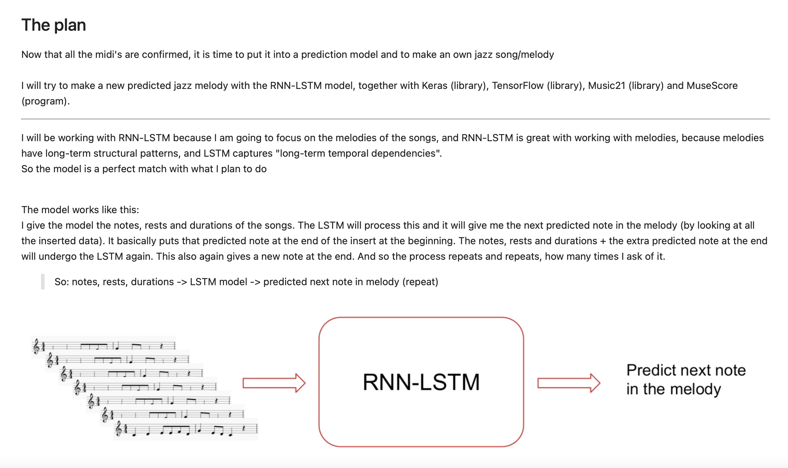
A better look can be found in the (ipynb) links


 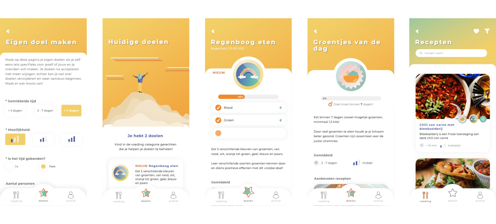
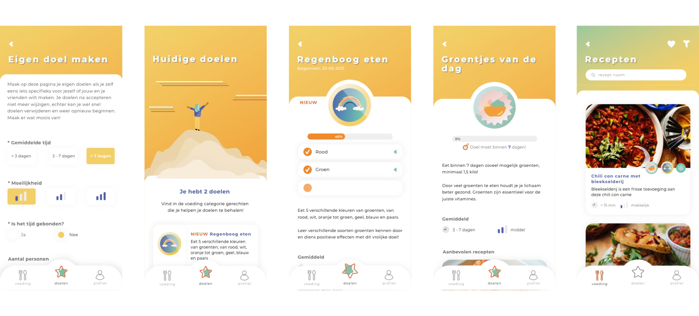

 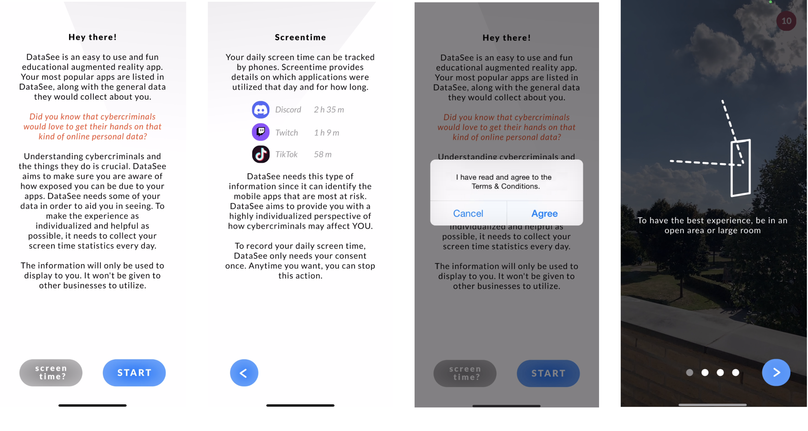
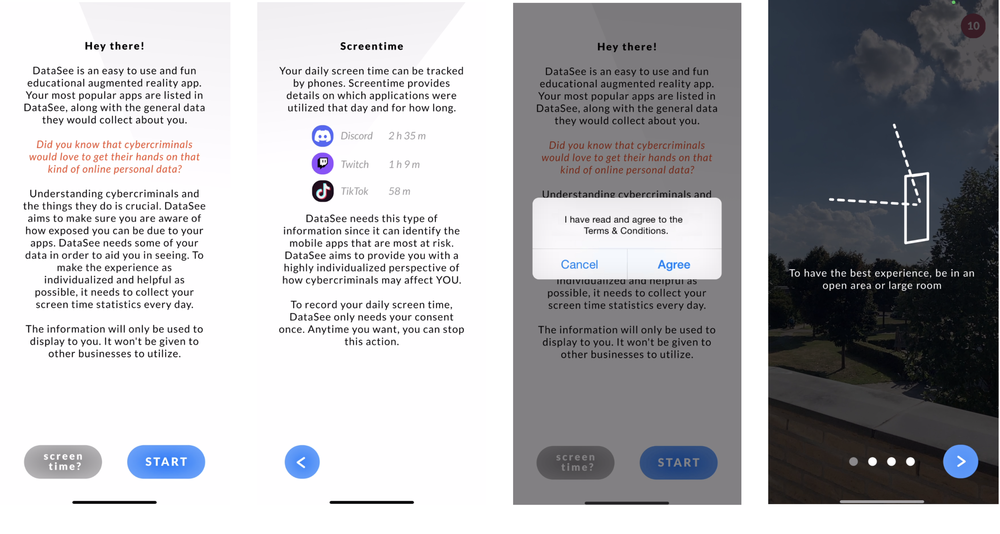


 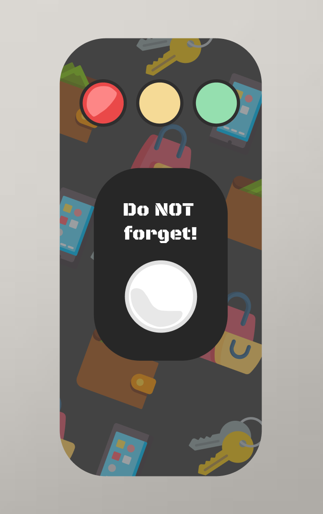
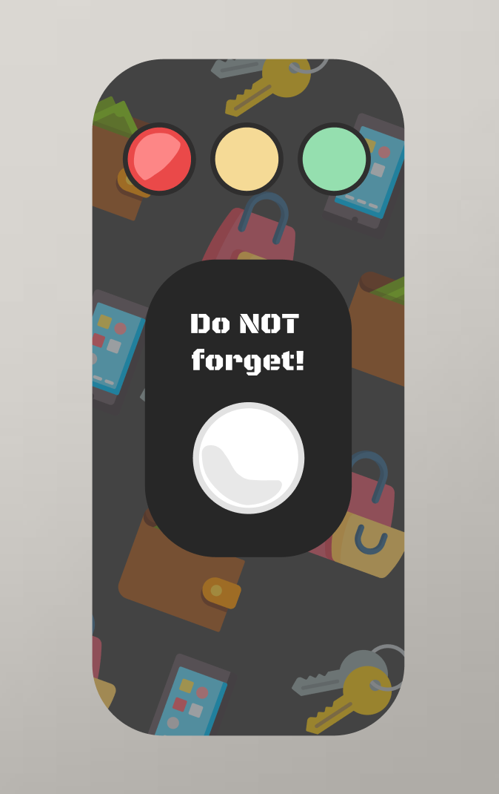 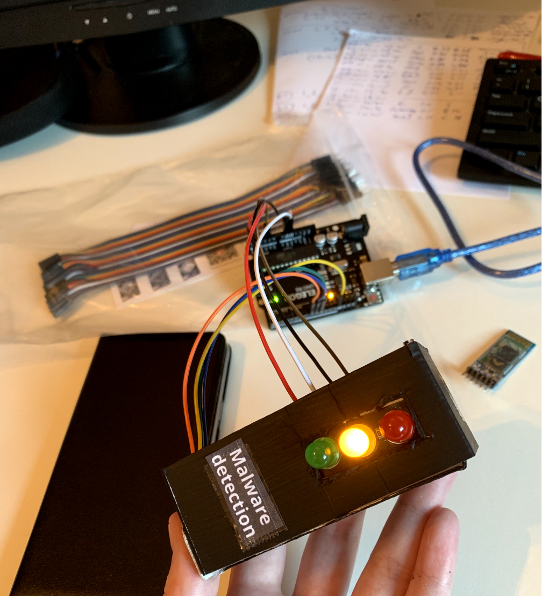
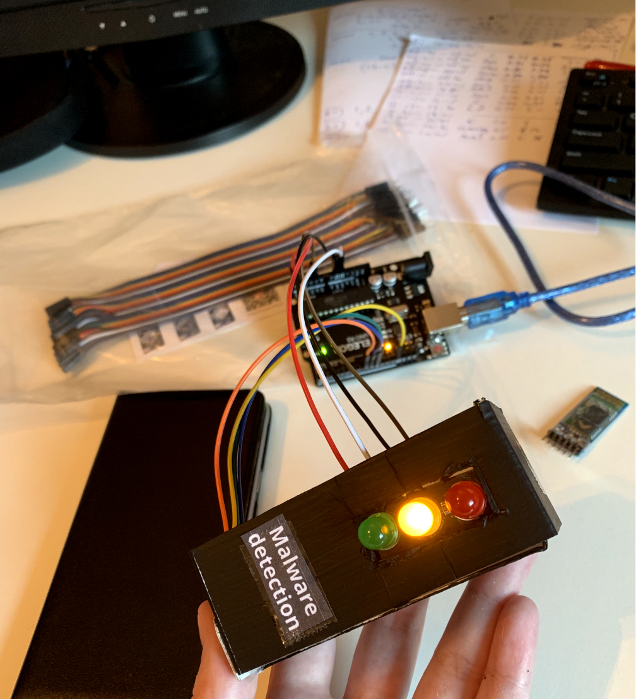


 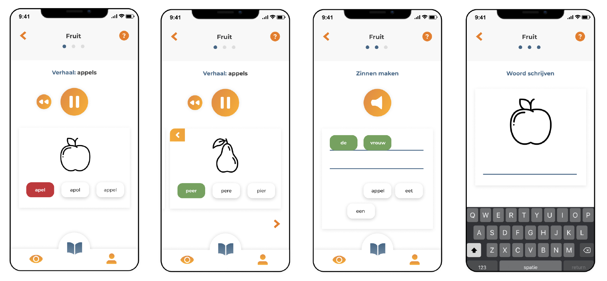
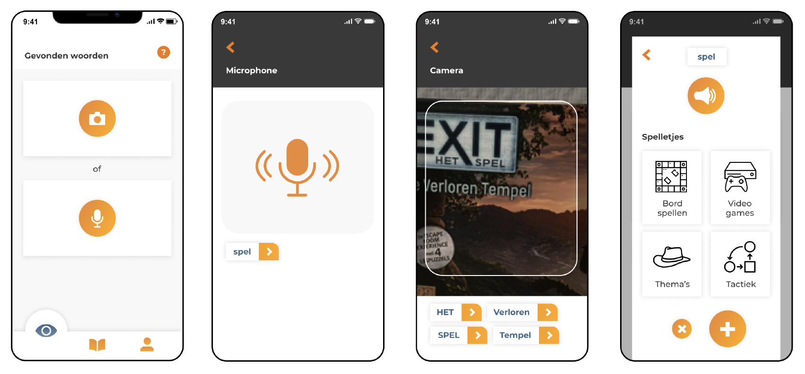
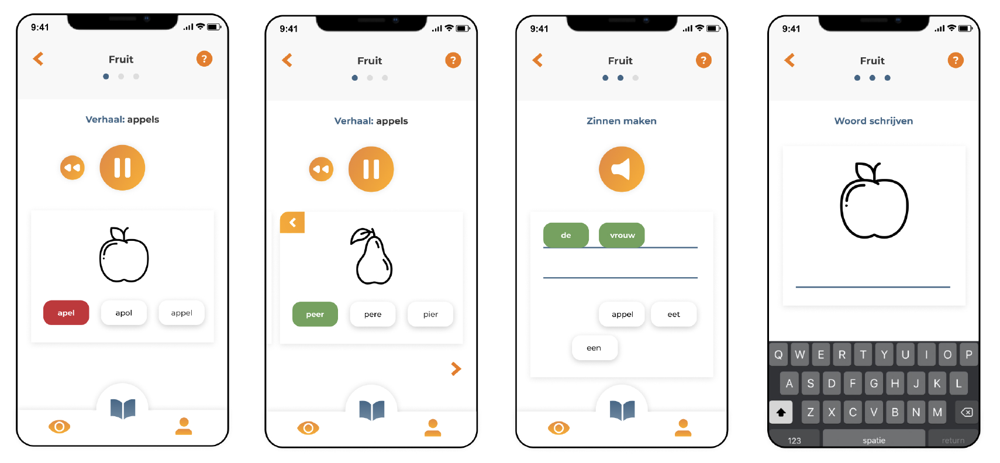
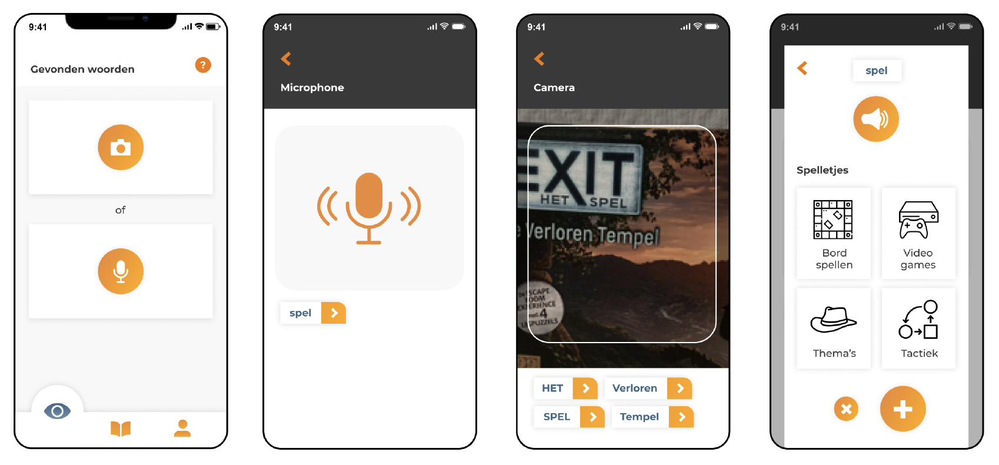